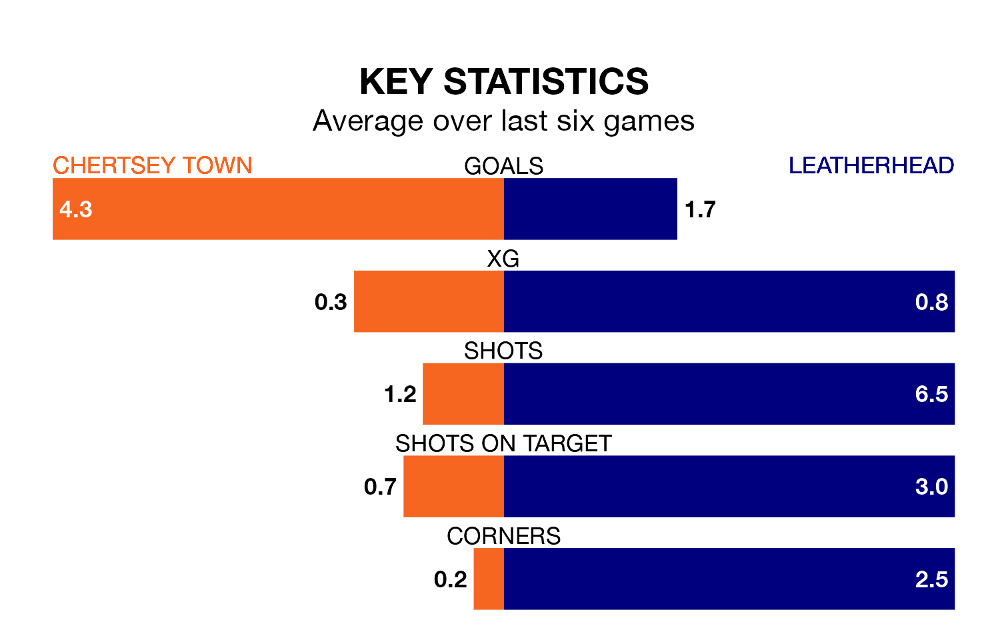

Two of Isthmian League Division One South Central's top sides face each other at the Alwyns Lane Football Ground in Tuesday's late kick-off, when table-topping Chertsey Town host third-placed Leatherhead.
Chertsey have picked up 18 wins and four draws from 23 games so far this season, and sit six points above the visitors going into the 7.45pm match.
Leatherhead, meanwhile, have won 16 and drawn four of 24, picking up 52 points.
With 66 goals in 23 games so far this season, Chertsey are the league's highest scorers with 2.9 goals per game. And they are conceding fewer than average, letting in 18 goals at a rate of 0.8 per game.
Leatherhead, meanwhile, are below average scorers, with 1.6 goals per game, compared to a league average of 1.7. They have conceded 0.7 goals per game.
Town are in fantastic form in Isthmian League Division One South Central, with five wins and a draw from their last six games.
With four wins and a draw over that period, the away side's form is worse – they have taken 13 points from 18, compared to the Curfews' 16.
In the last five years, Chertsey and Leatherhead have played each other on four occasions. Chertsey won three of them and they drew once.
On average, the Curfews scored 1.8 goals and Leatherhead 0.5 in those matches.
Their last meeting was on October 10, when Chertsey won 1-0 away.
Chertsey's last match was on Saturday, a 2-1 win against Ashford Town Middlesex.
Leatherhead beat Thatcham Town 2-0 last time out, also on Saturday.
Updated: 09:21 (UTC), 30/01/24